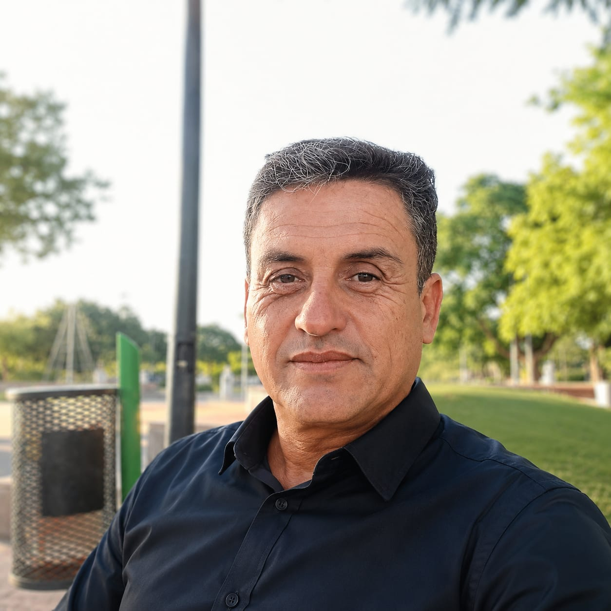

Promotor Comunitario
Agente Sanitario
Disponibilidad Full Time
Comprometido con la salud y el bienestar de nuestra comunidad.
Promotor comunitario y agente sanitario con experiencia en trabajo territorial, contacto directo con vecinos y detección de problemáticas sociales y sanitarias.
Formación en promoción y prevención de la salud y en actividad física para adultos mayores.
Comprometido con el desarrollo social, la inclusión y la mejora de la calidad de vida en los barrios.
600 horas - Año 2026
640 horas - Año 2025
600 horas - Año 2025
📍 Moreno, Buenos Aires
📞 11-5560-9556
📞 11-5560-9556
🕒 Disponibilidad Full Time